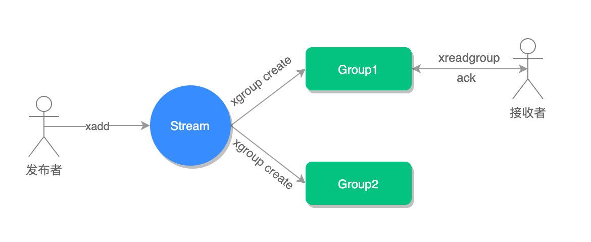

- 01 Redis 是如何执行的.md.html
- 02 Redis 快速搭建与使用.md.html
- 03 Redis 持久化——RDB.md.html
- 04 Redis 持久化——AOF.md.html
- 05 Redis 持久化——混合持久化.md.html
- 06 字符串使用与内部实现原理.md.html
- 07 附录：更多字符串操作命令.md.html
- 08 字典使用与内部实现原理.md.html
- 09 附录：更多字典操作命令.md.html
- 10 列表使用与内部实现原理.md.html
- 11 附录：更多列表操作命令.md.html
- 12 集合使用与内部实现原理.md.html
- 13 附录：更多集合操作命令.md.html
- 14 有序集合使用与内部实现原理.md.html
- 15 附录：更多有序集合操作命令.md.html
- 16 Redis 事务深入解析.md.html
- 17 Redis 键值过期操作.md.html
- 18 Redis 过期策略与源码分析.md.html
- 19 Redis 管道技术——Pipeline.md.html
- 20 查询附近的人——GEO.md.html
- 21 游标迭代器（过滤器）——Scan.md.html
- 22 优秀的基数统计算法——HyperLogLog.md.html
- 23 内存淘汰机制与算法.md.html
- 24 消息队列——发布订阅模式.md.html
- 25 消息队列的其他实现方式.md.html
- 26 消息队列终极解决方案——Stream（上）.md.html
- 27 消息队列终极解决方案——Stream（下）.md.html
- 28 实战：分布式锁详解与代码.md.html
- 29 实战：布隆过滤器安装与使用及原理分析.md.html
- 30 完整案例：实现延迟队列的两种方法.md.html
- 31 实战：定时任务案例.md.html
- 32 实战：RediSearch 高性能的全文搜索引擎.md.html
- 33 实战：Redis 性能测试.md.html
- 34 实战：Redis 慢查询.md.html
- 35 实战：Redis 性能优化方案.md.html
- 36 实战：Redis 主从同步.md.html
- 37 实战：Redis哨兵模式（上）.md.html
- 38 实战：Redis 哨兵模式（下）.md.html
- 39 实战：Redis 集群模式（上）.md.html
- 40 实战：Redis 集群模式（下）.md.html
- 41 案例：Redis 问题汇总和相关解决方案.md.html
- 42 技能学习指南.md.html
- 43 加餐：Redis 的可视化管理工具.md.html
27 消息队列终极解决方案——Stream（下）
在开始使用消息分组之前，我们必须手动创建分组才行，以下是几个和 Stream 分组有关的命令，我们先来学习一下它的使用。
消息分组命令
创建消费者群组
127.0.0.1:6379> xgroup create mq group1 0-0
OK
相关语法：
xgroup create stream-key group-key ID
其中：
- mq 为 Stream 的 key；
- group1 为分组的名称；
- 0-0 表示从第一条消息开始读取。
如果要从当前最后一条消息向后读取，使用 $ 即可，命令如下：
127.0.0.1:6379> xgroup create mq group2 $
OK
读取消息
127.0.0.1:6379> xreadgroup group group1 c1 count 1 streams mq >
1) 1) "mq"
2) 1) 1) "1580959593553-0"
2) 1) "name"
2) "redis"
3) "age"
4) "10"
相关语法：
xreadgroup group group-key consumer-key streams stream-key
其中：
>表示读取下一条消息；- group1 表示分组名称；
- c1 表示 consumer（消费者）名称。
xreadgroup 命令和 xread 使用类似，也可以设置阻塞读取，命令如下：
127.0.0.1:6379> xreadgroup group group1 c2 streams mq >
1) 1) "mq"
2) 1) 1) "1580959606181-0"
2) 1) "name"
2) "java"
3) "age"
4) "20"
127.0.0.1:6379> xreadgroup group group1 c2 streams mq >
(nil) #队列中的消息已经被读取完
127.0.0.1:6379> xreadgroup group group1 c1 count 1 block 0 streams mq > #阻塞读取
此时打开另一个命令行创建使用 xadd 添加一条消息，阻塞命令执行结果如下：
127.0.0.1:6379> xreadgroup group group1 c1 count 1 block 0 streams mq >
1) 1) "mq"
2) 1) 1) "1580961475368-0"
2) 1) "name"
2) "sql"
3) "age"
4) "20"
(86.14s)
消息消费确认
接收到消息之后，我们要手动确认一下（ack），命令如下：
127.0.0.1:6379> xack mq group1 1580959593553-0
(integer) 1
相关语法：
xack key group-key ID [ID ...]
消费确认增加了消息的可靠性，一般在业务处理完成之后，需要执行 ack 确认消息已经被消费完成，整个流程的执行如下图所示：

查询未确认的消费队列
127.0.0.1:6379> xpending mq group1
1) (integer) 1 #未确认（ack）的消息数量为 1 条
2) "1580994063971-0"
3) "1580994063971-0"
4) 1) 1) "c1"
2) "1"
127.0.0.1:6379> xack mq group1 1580994063971-0 #消费确认
(integer) 1
127.0.0.1:6379> xpending mq group1
1) (integer) 0 #没有未确认的消息
2) (nil)
3) (nil)
4) (nil)
xinfo 查询相关命令
1. 查询流信息
127.0.0.1:6379> xinfo stream mq
1) "length"
2) (integer) 2 #队列中有两个消息
3) "radix-tree-keys"
4) (integer) 1
5) "radix-tree-nodes"
6) (integer) 2
7) "groups"
8) (integer) 1 #一个消费分组
9) "last-generated-id"
10) "1580959606181-0"
11) "first-entry"
12) 1) "1580959593553-0"
2) 1) "name"
2) "redis"
3) "age"
4) "10"
13) "last-entry"
14) 1) "1580959606181-0"
2) 1) "name"
2) "java"
3) "age"
4) "20"
相关语法：
xinfo stream stream-key
2. 查询消费组消息
127.0.0.1:6379> xinfo groups mq
1) 1) "name"
2) "group1" #消息分组名称
3) "consumers"
4) (integer) 1 #一个消费者客户端
5) "pending"
6) (integer) 1 #一个未确认消息
7) "last-delivered-id"
8) "1580959593553-0" #读取的最后一条消息 ID
相关语法：
xinfo groups stream-key
3. 查看消费者组成员信息
127.0.0.1:6379> xinfo consumers mq group1
1) 1) "name"
2) "c1" #消费者名称
3) "pending"
4) (integer) 0 #未确认消息
5) "idle"
6) (integer) 481855
相关语法：
xinfo consumers stream group-key
删除消费者
127.0.0.1:6379> xgroup delconsumer mq group1 c1
(integer) 1
相关语法：
xgroup delconsumer stream-key group-key consumer-key
删除消费组
127.0.0.1:6379> xgroup destroy mq group1
(integer) 1
相关语法：
xgroup destroy stream-key group-key
代码实战
接下来我们使用 Jedis 来实现 Stream 分组消息队列，代码如下：
import com.google.gson.Gson;
import redis.clients.jedis.Jedis;
import redis.clients.jedis.StreamEntry;
import redis.clients.jedis.StreamEntryID;
import utils.JedisUtils;
import java.util.AbstractMap;
import java.util.HashMap;
import java.util.List;
import java.util.Map;
public class StreamGroupExample {
private static final String _STREAM_KEY = "mq"; // 流 key
private static final String _GROUP_NAME = "g1"; // 分组名称
private static final String _CONSUMER_NAME = "c1"; // 消费者 1 的名称
private static final String _CONSUMER2_NAME = "c2"; // 消费者 2 的名称
public static void main(String[] args) {
// 生产者
producer();
// 创建消费组
createGroup(_STREAM_KEY, _GROUP_NAME);
// 消费者 1
new Thread(() -> consumer()).start();
// 消费者 2
new Thread(() -> consumer2()).start();
}
/**
* 创建消费分组
* @param stream 流 key
* @param groupName 分组名称
*/
public static void createGroup(String stream, String groupName) {
Jedis jedis = JedisUtils.getJedis();
jedis.xgroupCreate(stream, groupName, new StreamEntryID(), true);
}
/**
* 生产者
*/
public static void producer() {
Jedis jedis = JedisUtils.getJedis();
// 添加消息 1
Map<String, String> map = new HashMap<>();
map.put("data", "redis");
StreamEntryID id = jedis.xadd(_STREAM_KEY, null, map);
System.out.println("消息添加成功 ID：" + id);
// 添加消息 2
Map<String, String> map2 = new HashMap<>();
map2.put("data", "java");
StreamEntryID id2 = jedis.xadd(_STREAM_KEY, null, map2);
System.out.println("消息添加成功 ID：" + id2);
}
/**
* 消费者 1
*/
public static void consumer() {
Jedis jedis = JedisUtils.getJedis();
// 消费消息
while (true) {
// 读取消息
Map.Entry<String, StreamEntryID> entry = new AbstractMap.SimpleImmutableEntry<>(_STREAM_KEY,
new StreamEntryID().UNRECEIVED_ENTRY);
// 阻塞读取一条消息（最大阻塞时间120s）
List<Map.Entry<String, List<StreamEntry>>> list = jedis.xreadGroup(_GROUP_NAME, _CONSUMER_NAME, 1,
120 * 1000, true, entry);
if (list != null && list.size() == 1) {
// 读取到消息
Map<String, String> content = list.get(0).getValue().get(0).getFields(); // 消息内容
System.out.println("Consumer 1 读取到消息 ID：" + list.get(0).getValue().get(0).getID() +
" 内容：" + new Gson().toJson(content));
}
}
}
/**
* 消费者 2
*/
public static void consumer2() {
Jedis jedis = JedisUtils.getJedis();
// 消费消息
while (true) {
// 读取消息
Map.Entry<String, StreamEntryID> entry = new AbstractMap.SimpleImmutableEntry<>(_STREAM_KEY,
new StreamEntryID().UNRECEIVED_ENTRY);
// 阻塞读取一条消息（最大阻塞时间120s）
List<Map.Entry<String, List<StreamEntry>>> list = jedis.xreadGroup(_GROUP_NAME, _CONSUMER2_NAME, 1,
120 * 1000, true, entry);
if (list != null && list.size() == 1) {
// 读取到消息
Map<String, String> content = list.get(0).getValue().get(0).getFields(); // 消息内容
System.out.println("Consumer 2 读取到消息 ID：" + list.get(0).getValue().get(0).getID() +
" 内容：" + new Gson().toJson(content));
}
}
}
}
以上代码运行结果如下：
消息添加成功 ID：1580971482344-0
消息添加成功 ID：1580971482415-0
Consumer 1 读取到消息 ID：1580971482344-0 内容：{"data":"redis"}
Consumer 2 读取到消息 ID：1580971482415-0 内容：{"data":"java"}
其中，jedis.xreadGroup() 方法的第五个参数 noAck 表示是否自动确认消息，如果设置 true 收到消息会自动确认（ack）消息，否则则需要手动确认。
注意：Jedis 框架要使用最新版，低版本 block 设置大于 0 时，会有 bug 抛连接超时异常。
可以看出，同一个分组内的多个 consumer 会读取到不同消息，不同的 consumer 不会读取到分组内的同一条消息。
小结
本文我们介绍了 Stream 分组的相关知识，使用 Jedis 的 xreadGroup() 方法实现了消息的阻塞读取，并且使用此方法自带 noAck 参数，实现了消息的自动确认，通过本文我们也知道了，一个分组内的多个 consumer 会轮询收到消息队列的消息，并且不会出现一个消息被多个 consumer 读取的情况。
如果你看了本文的知识还是觉得没看懂，那是因为你没有结合实践去理解，所以如果对本文还有疑问，跟着本文一步一步实践起来吧。